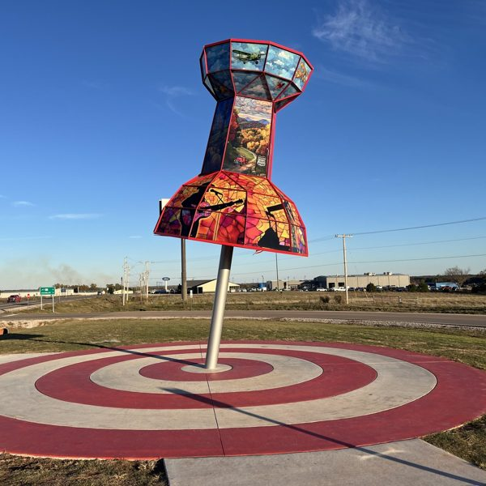

MOTHER ROAD66ON THE AIR
Mother Road On The Air
CQ Mother Road

MR-OK-001, the push pin in Wellston, where it all started.
A free, year-round ham radio program at Route 66 landmarks. Activators get on the air from the stops, and hunters work them from home. It works like POTA, with a road trip twist.
Oklahoma is first, with 24 stops from Commerce to Erick.
On the air January 1, 2027
Founders Season runs through April 30, the day Route 66 got its number.
Rules, stop list, log uploads and awards all go live here on January 1. Until then, follow along on Facebook:
MROTA on Facebook